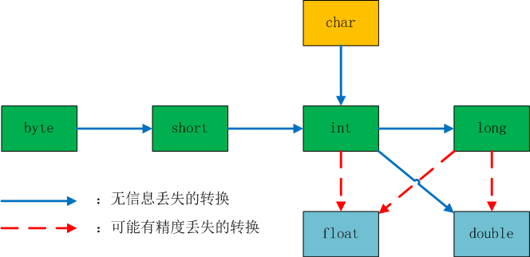

Java总结 - 基本概念
本文主要介绍一些Java中的基本概念，包括数据类型、变量、运算符、字符串、输入输出、控制流程、大数值、数组。
数据类型
Java是一种强类型语言，必须为每一个变量声明一种类型。Java中一共有8种基本类型，其中有4种整型、2种浮点型、1种用于表示Unicode编码的字符单元的字符型char、1种用于表示真值的boolean型。
整型
| 类型 | 存储需求 | 后缀 |
|---|---|---|
| int | 4字节 | 无 |
| short | 2字节 | 无 |
| long | 8字节 | L,如1000000000L |
| byte | 1字节 | 无 |
前缀：16进制0x，8进制0，如100的16进制为0x64，8进制为0144，从Java7开始，加上前缀0b就可以写二进制数，并且，从Java7开始，可以为数字中加下划线，如：int i = 1_0_0如下：
1 | int i = 1_0_0; |
结果为true。
浮点型
| 类型 | 存储需求 | 后缀 |
|---|---|---|
| float | 4字节 | F,如12.3F |
| double | 8字节 | D,如12345678.9D |
三个特殊的浮点数值：
- 正无穷，Float.POSITIVE_INFINITY/Double.POSITIVE_INFINITY
- 负无穷，Float.NEGATIVE_INFINITY/Double.NEGATIVE_INFINITY
- NaN(非数字), Float.NaN/Double.NaN
注意：不能这样检测一个特定值是否等于Double.NaN
if(x == Double.NaN) // is never true
所有"非数值"的值都认为是不同的，应该使用：
if(Double.isNan(x)) // check whether x is "not a number"
警告：浮点型不适用于禁止出现舍入误差的金融计算中，如果需要在数值计算中不含有任何舍入误差，应该使用BigDecimal类。
char型
char表示单个Unicode编码的字符。Unicode编码单元可以表示为16进制，其范围从\U0000到\Uffff。
变量
- 在Java中，每一个变量属于一种类型。
- 变量名必须是以字母开头的由字母或数字构成的序列，不可使用保留字。
- 可以在一行中声明多个变量，但不提倡这样做，逐一声明每一个变量可以提高程序的可读性。
- 使用final关键字表示常量——只能被赋值一次，一旦被赋值后，就不能够再更改了。
运算符
算术运算符
| 符号 | 含义 |
|---|---|
| + | 加 |
| - | 减 |
| * | 乘 |
| / | 除 |
- 写法：x = x + 2;
- 简化格式：x += 2;
- 自增/自减运算：n++（先用后加）/++n（先加后用）；自减运算：n–（先用后减）/–n（先减后用）。
使用strictfp关键字标记的方法必须使用严格的浮点计算来产生理想的结果，如果将一个类标记为strictfp，这个类中的所有方法都要使用严格的浮点计算。
逻辑运算符
| 符号 | 含义 |
|---|---|
| > | 大于 |
| < | 小于 |
| >= | 大于等于 |
| <= | 小于等于 |
| == | 等于 |
| != | 非等于 |
| && | 与 |
| || | 或 |
| ! | 非 |
位运算
| 符号 | 含义 |
|---|---|
| & | 与 |
| | | 或 |
| ! | 非 |
| >> | 右移位，可以用来屏蔽低位，或进行2的倍数计算，如8>>3 == 1，计算过程：转化为2进制即0b1000>>3，为2进制0b0001； |
| << | 左移位，可以用来屏蔽高们，或进行2的倍数计算，如1<<3 == 8，计算过程：转化为2进制即0b0001<<3，为2进制0b1000; |
| >>> | 右移位，用0填充高位，与>>的区别在于：>>用符号位填充高位；没有<<<运算符。 |
注意：对移位运算符右侧的参数需要进行模32的运算（如果左侧的操作数是long类型，则需要模64。）
数学函数
Math类中包含了各种各样的数学函数，所有的方法都使用计算机浮点单元中的例程。如果得到一个完全可预测的结果比运行速度更重要的话，需要使用StrictMath类，它使用“自由发布的Math库”(fdlibm)实现算法，以确保所有平台上得到相同的结果。
数值类型间的转换

当数值进行运算时，需要先将两个操作数转换为同一种类型，遵循如下原则：
如果存在double，则转换成double；
否则，如果存在float，则转换成float；
否则，如果存在long，则转换成long；
否则，都转换成int；
强制类型转换
如：double d = 1.234; int i = (int)d; i的值为1；强制类型转换通过截断小数部分将浮点值转换为整型。
注意：如果将一个数值强制转换成另一个类型，而又超出了目标类型的表示范围，结果会截断成一个完全不同的值。如：(byte)300 == 44。
括号与运算符级别
括号优先，无括号的按照优先级次序进行计算。同一个级别的运算符按照从左到右的次序进行计算（右结合运算符按照从右到左进行计算。）。
枚举型
变量的取值只在一个有限的集合内，如enum Size {SMALL, MEDIUM, LARGE, EXTRA_LARGE};
字符串
Java字符串就是Unicode的字符序列。
- 赋值：String string = “string”;
- 子串：String subStr = string.substring(0,3);从0开始，截取长度为3的字符串；
- 拼接：使用+号将两个字符串拼接；
==判断两个String对象是否放在同一个位置上。
equals判断两个String对象的值是否相等。
“”与null是不相同的概念，null表示空对象，””表示字符串为空值。
注意，尽量不使用char型，原因是：在使用辅助字符时，由于辅助字符会占用两个代码单元，所以会导致charAt()方法得不到想要的结果。
深入理解
对String对象的任何改变都会生成新的对象。
1 | String str1 = "string"; |
以上代码的输出结果是：
true
false
false
这是因为JVM引擎会先在运行时常量池查找是否存在相同的字面常量，如果存在，则直接指向已经存在的字面常量；否则，开辟一个空间来存储该字面常量，并指向该指面常量。所以str1 == str2返回为true。
而使用new关键字来创建的对象都是在堆区进行的，不会去检测对象是否已经存在。因此，通过new创建的对象，一定是不相同的。
String、StringBuilder、StringBuffer都是final类，这意味着它们不能被继承，也它们的所有方法都是final方法，即方法不能被覆盖。在需要进行大量的字符串拼接操作时，使用StringBuilder与StringBuffer的效率比String类要高，StringBuilder类非线程安全，StringBuffer类线程安全。
直接使用String类进行拼接：1
2
3
4
5
6public class StringStudy {
public static void main(String args[]) {
String str = "str";
str += "ing";
}
}
StringBuilder与StringBuffer都继承自AbstractStringBuilder，拼接操作都调用的是AbstractStringBuilder类中的append方法，所以这里只使用StringBuilder来与String进行比较：1
2
3
4
5
6public class StringBuilderStudy {
public static void main(String args[]) {
StringBuilder sb = new StringBuilder("str");
sb.append("ing");
}
}
使用javap -c查看两段代码的字节码分别如下：
1 | Compiled from "StringStudy.java" |
1 | Compiled from "StringBuilderStudy.java" |
可以看出，String的拼接操作是创建一个StringBuilder对象，并调用append方法来实现的，所以效率上一定比不上直接使用StringBuilder。
输入输出
简单介绍一下，详情请见Java总结 - IO与Java总结 - NIO
System.in输入流
System.out输出流
Java 6引入了Console类实现从控制台读取密码，用法如下：
Console console = System.console();
String username = console.readLine("User name:");
char[] passwd = console.readPassword("Password:");
格式化输出
| 转称符 | 类型 |
|---|---|
| %d | 十进制整数 |
| %x | 十六进制整数 |
| %o | 八进制整数 |
| %f | 定点浮点数 |
| %e | 指数浮点数 |
| %g | 通用浮点数 |
| %a | 十六进制浮点数 |
| %s | 字符串 |
| %c | 字符 |
| %b | 布尔型 |
| %h | 散列码 |
| %tx | 日期时间 |
| %% | 百分号 |
| %n | 行分隔符 |
控制流程
块作用域
以一对花括号{}括起来的若干条Java语句称为块，一个块可以嵌套在另一个块中，不能在嵌套的两个块中声明同名的变量。
条件语句
格式
- if(condition) statement
- if(condition) statement1 else statement2
- if(condition1) statement1 else if(condition2) statement2 else statement3
- switch //多重选择
循环语句
- while(condition) statement
- do statement while(condition) // 先执行一次再判断条件进行循环
- for(define; condition; statement) statement
- for(variable : collection) statement // for each
中断控制流程语句
- break：跳出并退出循环
- 带标签的break：用于跳出多重嵌套的循环，标签必须放在希望跳出的最外层循环之前，并且必须紧跟一个冒号，如下：
label:
while(…){
…
whille(…){
…
break label;
}
} - continue : 跳出并继续循环
大数值
BigInteger和BigDecimal可以处理包含任意长度数字序列的数值。BigInteger实现了任意精度的整数运算，BigDecimal实现了任意精度的浮点数运算。
| 方法 | 含义 |
|---|---|
| add | 加 |
| subtract | 减 |
| multiply | 乘 |
| divide | 除 |
| mod | 取模 |
数组
数组是一种数据结构，用来存储同一类型值的集合。通过一个整形下标可以访问数组中的每一个值，数组下标从0开始。
- 声明数组：int[] a;
- 定义数组：int[] a = new int[100];所有元素初始化为0；
String[] sa = new String[100];所有元素初始化为null；
一旦创建了数组，就不能再改变它的大小 ，如果需要在运行过程中扩展数组的大小，就应该使用另一种数据结构 —— array list。
Arrays类
Arrays类是JDK提供的一个工具类，方便对数组进行操作（比如排序和搜索），还包含一个允许将数组作为列表来查看的静态工厂。
- asList(T… a):返回一个受指定数组支持的固定大小的列表。
- binarySearch:一系列查找的方法，以byte型为例(其他类型类推)；
binarySearch(byte[] a, byte key):使用二分搜索法来搜索指定的 byte 型数组，以获得指定的值。
binarySearch(byte[] a, int fromIndex, int toIndex, byte key):使用二分搜索法来搜索指定的 byte 型数组的范围，以获得指定的值。
copyOf:一系列拷贝的方法，以byte型为例(其他类型类推)；
copyOf(byte[] original, int newLength):复制指定的数组，截取或用 0 填充（如有必要），以使副本具有指定的长度。 - copyOfRange:一系列指定范围的拷贝方法，以byte型为例(其他类型类推)；
copyOfRange(byte[] original, int from, int to):将指定数组的指定范围复制到一个新数组。 - deepEquals(Object[] a1, Object[] a2) :如果两个指定数组彼此是深层相等的，则返回true。
- deepHashCode(Object[] a) :基于指定数组的“深层内容”返回哈希码。
- deepToString(Object[] a) :返回指定数组“深层内容”的字符串表示形式。
- equals:一系列判断数组是否相等的方法，以byte型为例（其他类型类推）；
equals(byte[] a, byte[] a2):如果两个指定的 byte 型数组彼此相等，则返回 true。 - fill:一系列填充数组的方法，以byte型为例（其他类型类推）；
fill(byte[] a, byte val):将指定的 byte 值分配给指定 byte 节型数组的每个元素。
fill(byte[] a, int fromIndex, int toIndex, byte val):将指定的 byte 值分配给指定 byte 型数组指定范围中的每个元素。 - hashCode:一系列返回指定数组哈希码的方法，以byte型为例（其他类型类推）;hashCode(byte[] a)
- sort:一系列对指定数组排序的方法，以byte型为例（其他类型类推）;
sort(byte[] a):对指定的 byte 型数组按数字升序进行排序。
sort(byte[] a, int fromIndex, int toIndex):对指定 byte 型数组的指定范围按数字升序进行排序。 - toString:一系列得到指定数组内容的字符串表示形式的方法，以byte型为例（其他类型类推）;toString(byte[] a) 。
多维数组
即数组的数组，如下：
1 | int[][] a = { |